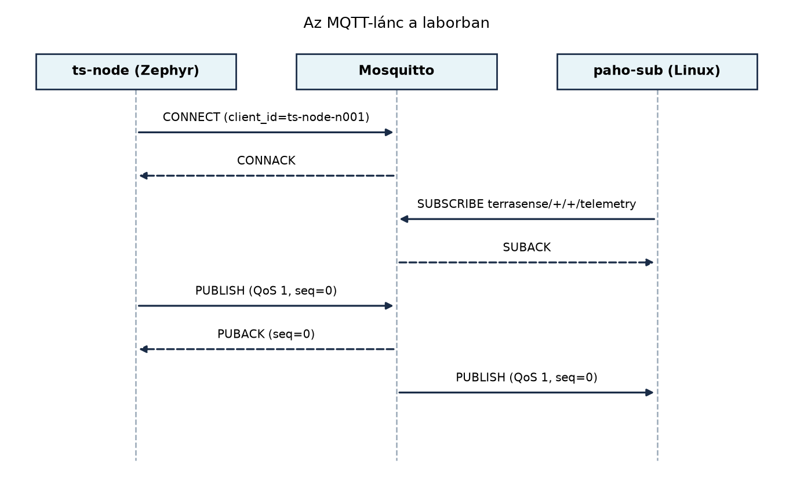

A MQTT QoS, munkamenetek, retain, Last Will és
MQTT 5 alfejezetben elméletben már ismerjük az MQTT fogalmait, de a
TerraSense-rendszer egyetlen rétege sem működik, ha a
ts-node nem tud valódi MQTT-üzenetet eljuttatni az
üzenetközvetítőhöz (brokerhez). Ebben az alfejezetben végre összekötjük
a korábban felépített labor-elemeket: a Zephyr native_sim
célon futtatott ts-node felépít egy újracsatlakozó
MQTT-publikálót, a Dockerben futó Mosquitto brokert a A labor felállítása: Linux host, Docker, Zephyr,
Mosquitto, Java alfejezetben létrehozott compose-vázból indítjuk, és
Linux oldalon egy C-ből használt Paho-előfizetővel ellenőrizzük a teljes
láncot. Ezzel a lánccal később a gateway (A ts-gw
szolgáltatás C++-ban: protokollfordítás MQTT-re), a biztonságos
kommunikáció (Biztonságos kapcsolat: TLS 1.3, mTLS
és DTLS az MQTT/CoAP alatt) és a záróprojekt (Záróprojekt: a teljes TerraSense rendszer összeállítása
és átvétele) is erre épít.
A Zephyr MQTT-kliens API-ja a Zephyr saját hálózati stackjére és a
socket API-ra épül. A kliens nem külön szálat indít, hanem az alkalmazás
felelős az úgynevezett input/live loop futtatásáért. A
kapcsolat felépítése után a mqtt_input() feldolgozza a
bejövő MQTT-vezérlő csomagokat, a mqtt_live() pedig a
keepalive időzítést és az újraküldést kezeli.
Definíció. Input/live loop: az
MQTT-kliens könyvtár által megkövetelt, az alkalmazás ciklusában
ismételten hívott eljáráspár. Az mqtt_input() olvassa a
socketről a bejövő bájtokat, és meghívja az eseménykezelőt; az
mqtt_live() karbantartja a kapcsolat állapotát: keepalive
ping, PUBACK-várakozás, újracsatlakozás előkészítése. Ha a loop kimarad,
a broker a keepalive-időtúllépés után lezárja a kapcsolatot.
Definíció. Exponenciális backoff: újracsatlakozási stratégia, amelyben két próba közötti várakozási idő a sikertelen kísérletek számával exponenciálisan nő, általában felső korláttal. Alakja: , ahol a sikertelen próbák száma. Ez megelőzi a hálózati vihart és kíméli az akkumulátort.
A Paho MQTT C kliens ezzel szemben egy Linux-host könyvtár, amely
szinkron vagy aszinkron módon is használható. A laborban a szinkron
API-t vesszük igénybe: MQTTClient_create(),
MQTTClient_connect(), MQTTClient_subscribe(),
majd egy MQTTClient_receive() ciklusban várakozunk az
üzenetekre.
Az alábbi sorrenddiagram a labor MQTT-láncát mutatja.

Az ábra szöveges összefoglalása: a ts-node csatlakozik a
brokerhez, a Linux paho-sub feliratkozik a
terrasense/+/+/telemetry wildcard topicra. A
ts-node publikál egy QoS 1 üzenetet, a broker nyugtázza,
majd továbbítja a feliratkozott kliensnek.
A laborban az MQTT 3.1.1-et használjuk, mert a Zephyr kliens ezt stabilan támogatja (ellenőrzési igény: a konkrét API és a támogatott protokollverzió a Zephyr kiadásától függhet). A production rendszerben az MQTT 5 bevezethető, ha a property-k és a munkamenet-kezelés előnyeit ki akarjuk használni, de a jelen tananyag a 3.1.1-re épül.
| Döntés | Választás a laborban | Indoklás |
|---|---|---|
| Hol fut az MQTT-kliens? | A ts-node-on |
A IP az eszközön alfejezetben bemutatott modell szerint a csomópont közvetlenül a brokerhez beszél. |
| MQTT protokollverzió | 3.1.1 | Széles körű kompatibilitás; a Zephyr kliens ezt biztosítja. |
| QoS telemetriához | 1 (at least once) | A későbbi idempotens ingest (Ingest: MQTT-ből a backendbe, idempotensen) megköveteli az üzenetek legalább egyszeri kézbesítését. |
| Clean session | true | A native_sim-eszköznek nincs szüksége a munkamenet
újrafelvételére; a valós eszköznél ezt a MQTT QoS,
munkamenetek, retain, Last Will és MQTT 5 alfejezetben tárgyalt
szempontok szerint állítjuk be. |
| Autentikáció | anonim (labor) | TLS és jelszó/tanúsítvány a Biztonságos kapcsolat: TLS 1.3, mTLS és DTLS az MQTT/CoAP alatt alfejezetben kerül be. |
A labor célja: a ts-node Zephyrben MQTT-n publikál a
terrasense/gh1/n001/telemetry topicra, a Mosquitto a
Dockerben fogadja, és egy Linuxon futó Paho C előfizető megjeleníti az
üzenetet. A labor nem használ valós hardvert; minden a
native_sim boardon és a hoston fut.
Munkakönyvtár:
mkdir -p ~/iot-labor/i028/ts-node-mqtt/src
mkdir -p ~/iot-labor/i028/paho-sub
cd ~/iot-labor/i028A korábban létrehozott
~/iot-labor/stack/mosquitto/mosquitto.conf fájlt bővítjük
ki a labor igényei szerint:
listener 1883
allow_anonymous true
log_dest stdout
log_type all
persistence falseA ~/iot-labor/stack/compose.yaml releváns részlete:
services:
lab-broker:
image: eclipse-mosquitto:2
container_name: terra-broker
ports:
- "1883:1883"
volumes:
- ./mosquitto/mosquitto.conf:/mosquitto/config/mosquitto.conf:ro
restart: unless-stoppedIndítsuk el a brokert:
cd ~/iot-labor/stack
docker compose up -d lab-broker
docker ps | grep terra-brokerVárt kimenet: a terra-broker konténer fut, és a 1883-as
port elérhető a hoston.
native_sim célonHozzuk létre a ts-node-mqtt alkalmazást. A
prj.conf:
CONFIG_NETWORKING=y
CONFIG_NET_IPV4=y
CONFIG_NET_DHCPV4=n
CONFIG_NET_CONFIG_SETTINGS=y
CONFIG_NET_CONFIG_MY_IPV4_ADDR="127.0.0.1"
CONFIG_MQTT_LIB=yEllenőrzési igény. A Zephyr
native_simhálózati konfigurációja és aCONFIG_MQTT_LIBnév pontos elérhetősége a használt Zephyr-verziótól függ; a fenti beállítások a jelen tananyag feltételezett környezetére vonatkoznak, de a build előtt ellenőrizni kell a Zephyr dokumentációjában.
A CMakeLists.txt:
cmake_minimum_required(VERSION 3.20.0)
find_package(Zephyr REQUIRED HINTS $ENV{ZEPHYR_BASE})
project(ts-node-mqtt)
target_sources(app PRIVATE src/main.c)A src/main.c:
#include <zephyr/kernel.h>
#include <zephyr/net/mqtt.h>
#include <errno.h>
#include <string.h>
#include <stdio.h>
#define SERVER_ADDR "127.0.0.1"
#define SERVER_PORT 1883
#define CLIENT_ID "ts-node-n001"
#define TOPIC_TELEMETRY "terrasense/gh1/n001/telemetry"
#define TOPIC_STATE "terrasense/gh1/n001/status"
static uint8_t rx_buffer[512];
static uint8_t tx_buffer[512];
static struct mqtt_client client;
static struct sockaddr_storage broker;
static uint32_t seq;
static void broker_init(void)
{
struct sockaddr_in *addr = (struct sockaddr_in *)&broker;
addr->sin_family = AF_INET;
addr->sin_port = htons(SERVER_PORT);
inet_pton(AF_INET, SERVER_ADDR, &addr->sin_addr);
}
static void mqtt_evt_handler(struct mqtt_client *const c, const struct mqtt_evt *evt)
{
if (evt->result != 0) {
printk("MQTT event error: %d\n", evt->result);
}
}
static int connect_mqtt(void)
{
int rc;
mqtt_client_init(&client);
client.broker = &broker;
client.evt_cb = mqtt_evt_handler;
client.client_id.utf8 = CLIENT_ID;
client.client_id.size = strlen(CLIENT_ID);
client.protocol_version = MQTT_VERSION_3_1_1;
client.clean_session = 1;
client.keepalive = 60;
client.rx_buf = rx_buffer;
client.rx_buf_size = sizeof(rx_buffer);
client.tx_buf = tx_buffer;
client.tx_buf_size = sizeof(tx_buffer);
rc = mqtt_connect(&client);
if (rc != 0) {
printk("MQTT connect failed: %d\n", rc);
} else {
printk("MQTT connected\n");
}
return rc;
}
static int publish_telemetry(void)
{
char payload[128];
int len = snprintf(payload, sizeof(payload),
"{\"node_id\":\"n001\",\"seq\":%u,\"ts\":0}", seq);
struct mqtt_publish_param param;
param.message.topic.qos = MQTT_QOS_1_AT_LEAST_ONCE;
param.message.topic.topic.utf8 = TOPIC_TELEMETRY;
param.message.topic.topic.size = strlen(TOPIC_TELEMETRY);
param.message.payload.data = payload;
param.message.payload.len = len;
param.message_id = mqtt_client_get_next_id(&client);
param.dup_flag = 0;
param.retain_flag = 0;
int rc = mqtt_publish(&client, ¶m);
if (rc != 0) {
printk("Publish failed: %d\n", rc);
return rc;
}
printk("Published: %s\n", payload);
seq++;
return 0;
}
void main(void)
{
int attempt = 0;
const int backoff_base_ms = 1000;
const int backoff_max_ms = 32000;
printk("ts-node MQTT publisher starting\n");
broker_init();
while (1) {
if (!client.connected) {
int rc = connect_mqtt();
if (rc != 0) {
int backoff = backoff_base_ms * (1 << attempt);
if (backoff > backoff_max_ms) {
backoff = backoff_max_ms;
}
printk("Reconnect backoff: %d ms\n", backoff);
k_sleep(K_MSEC(backoff));
attempt++;
continue;
}
attempt = 0;
}
mqtt_input(&client);
mqtt_live(&client);
if (client.connected && (k_uptime_get_32() % 5000 == 0)) {
publish_telemetry();
}
k_sleep(K_MSEC(100));
}
}A kód magyarázata:
broker_init() a 127.0.0.1:1883 végpontot
tölti fel a kliensstruktúrába.connect_mqtt() beállítja a client id-t, a
clean_session-t és a keepalive-ot, majd meghívja az
mqtt_connect()-et.publish_telemetry() egy minimális JSON payloadot
készít. A ts mezőt most nullával töltjük, hogy a laborban a
lánc működését igazoljuk; a tényleges időbélyeg-konvenciót a Következő lépések tárgyalja.seq monoton nő, így minden üzenet egyedi sorszámmal
megy ki.Build és futtatás:
cd ~/iot-labor/i028/ts-node-mqtt
west build -b native_sim -p always
./build/zephyr/zephyr.exeVárt kimenet:
ts-node MQTT publisher starting
MQTT connected
Published: {"node_id":"n001","seq":0,"ts":0}
Published: {"node_id":"n001","seq":1,"ts":0}
...A paho-sub/subscriber.c:
#include <stdio.h>
#include <stdlib.h>
#include <string.h>
#include <MQTTClient.h>
#define ADDRESS "tcp://127.0.0.1:1883"
#define CLIENTID "lab-paho-sub"
#define TOPIC "terrasense/+/+/telemetry"
#define QOS 1
#define TIMEOUT_MS 1000
static volatile int delivered;
int msgarrvd(void *context, char *topicName, int topicLen, MQTTClient_message *message)
{
printf("topic=%s payload=%.*s\n",
topicName, message->payloadlen, (char *)message->payload);
MQTTClient_freeMessage(&message);
MQTTClient_free(topicName);
delivered = 1;
return 1;
}
void connlost(void *context, char *cause)
{
printf("connection lost: %s\n", cause ? cause : "unknown");
}
int main(void)
{
MQTTClient client;
MQTTClient_connectOptions conn_opts = MQTTClient_connectOptions_initializer;
int rc;
MQTTClient_create(&client, ADDRESS, CLIENTID, MQTTCLIENT_PERSISTENCE_NONE, NULL);
conn_opts.keepAliveInterval = 20;
conn_opts.cleansession = 1;
MQTTClient_setCallbacks(client, NULL, connlost, msgarrvd, NULL);
if ((rc = MQTTClient_connect(client, &conn_opts)) != MQTTCLIENT_SUCCESS) {
fprintf(stderr, "connect failed: %d\n", rc);
return 1;
}
if ((rc = MQTTClient_subscribe(client, TOPIC, QOS)) != MQTTCLIENT_SUCCESS) {
fprintf(stderr, "subscribe failed: %d\n", rc);
return 1;
}
printf("waiting on %s\n", TOPIC);
while (!delivered) {
MQTTClient_receive(client, TIMEOUT_MS);
}
MQTTClient_disconnect(client, 1000);
MQTTClient_destroy(&client);
return 0;
}A Paho C szinkron kliens a MQTTClient_receive() hívással
blokkol legfeljebb a megadott timeoutig. Az eseménykezelő
msgarrvd minden beérkező üzenetre lefut; itt kiírom a
topicot és a payloadot, majd a delivered flaget beállítom,
hogy a program egy üzenet után kilépjen.
Telepítés és build (ha a libpaho-mqtt-dev még nincs
fent):
sudo apt install libpaho-mqtt-dev # ellenőrizendő a pontos csomagnév
cd ~/iot-labor/i028/paho-sub
gcc -o sub subscriber.c -lpaho-mqtt3cFuttatás egy másik terminálban, miközben a Zephyr alkalmazás fut:
cd ~/iot-labor/i028/paho-sub
./subVárt kimenet:
waiting on terrasense/+/+/telemetry
topic=terrasense/gh1/n001/telemetry payload={"node_id":"n001","seq":12,"ts":0}Továbbvitt eredmény. Ebben a laborban létrejött a
működő MQTT-lánc: a ts-node a
terrasense/gh1/n001/telemetry topicra publikál QoS 1-gyel,
node_id és monoton seq mezőkkel,
clean_session=1 beállítással. A broker a
stack/compose.yaml szerinti lab-broker
szolgáltatás, a Paho C előfizető a hivatkozott fájl. Ezt a láncot
használja a ts-gw szolgáltatás C++-ban:
protokollfordítás MQTT-re alfejezet, a Biztonságos kapcsolat: TLS 1.3, mTLS és DTLS az
MQTT/CoAP alatt alfejezet, és a Záróprojekt: a
teljes TerraSense rendszer összeállítása és átvétele alfejezet.
Ellenőrzéshez használhatjuk a parancssori
mosquitto_sub-ot is:
mosquitto_sub -h 127.0.0.1 -t 'terrasense/+/+/telemetry' -vEnnek ugyanazt az üzenetfolyamot kell mutatnia, mint a Paho-előfizetőnek. A Zephyr logban a „Published” sorok jelennek meg minden egyes küldésnél.
| Hibatünet | Lehetséges ok | Javítás |
|---|---|---|
| A Zephyr alkalmazás nem csatlakozik | A broker nem fut, vagy a 1883-as port foglalt | docker ps és ss -tlnp ellenőrzése, a
Mosquitto indítása |
| A Zephyr log „MQTT connect failed” | Hálózati konfiguráció hiányzik vagy helytelen | prj.conf ellenőrzése, CONFIG_NETWORKING=y
és IP-beállítások |
| A Paho-sub nem kap üzenetet | A topic wildcard hibás, vagy a subscription után nincs
MQTTClient_receive() ciklus |
Ellenőrizd a topicot: terrasense/+/+/telemetry, és a
ciklust |
| A kapcsolat megszakad, és nem áll vissza | A mqtt_connect() visszatérési értékét nem kezeljük |
Az exponenciális backoff kódrész beépítése |
| A broker a Paho-subból kizárja a ts-node-ot | Az MQTT 3.1.1-ben azonos client id miatt a régebbi kapcsolat lezárul | Egyedi CLIENT_ID használata minden kliensnél |
Az input/live loop elhagyása. A Zephyr
MQTT-kliens nem külön szál, és a keepalive-ot az alkalmazásnak kell
karbantartania. Ha a mqtt_live() nem fut, a broker a
keepalive-időtúllépés után lezárja a kapcsolatot.
Újracsatlakozás fix késleltetéssel. Ha minden sikertelen próba után ugyanannyit várakozunk, akkor a hálózati hiba elhárulásakor a csomópont feleslegesen sokat alszik. Az exponenciális backoff a kezdeti gyors újrapróbálkozást és a későbbi energiatakarékos ritmust kombinálja.
A seq nem monoton növekvő. A seq
sorszámmal a későbbi idempotens ingest (Ingest:
MQTT-ből a backendbe, idempotensen) azonosítja az üzeneteket. Ha a
számláló újraindulás után nullázódik, a duplikátumok észrevétlenek
maradnak.
A Last Will elhagyása. A ts-node
normál leállásakor a status topic retained üzenete nem
frissül; a rendszer nem tudja, hogy az eszköz offline lett. A Last Will
beállítása a MQTT QoS, munkamenetek, retain, Last
Will és MQTT 5 alfejezetben leírtak szerint kötelező.
Időbélyeg nélküli vagy uptime-ot használó
payload. A ts mező most placeholder nulla, de éles
rendszerben UTC epoch ms kell. Az uptime nem hordoz globális sorrendet,
ezért a telemetria-sémát a Idő az IoT-ban:
időbélyeg, időszinkron, sorrend alfejezet szerint kell
véglegesíteni.
Miért nem elegendő, ha a Zephyr MQTT-kliensben csak a
mqtt_connect() és a mqtt_publish() hívásokat
használjuk? Mi a szerepe az mqtt_input() és az
mqtt_live() hívásoknak?
Egy eszköz a laborban használt exponenciális backoffot használja:
base = 1000 ms, max = 32000 ms. Hány másodperc
a teljes várakozási idő, ha az első öt újracsatlakozási kísérlet mind
sikertelen, és a hatodik kísérlet sikerült? (A várakozás mindig a
sikertelen próba után következik be.)
Módosítsd a ts-node-mqtt/src/main.c fájlt úgy, hogy a
mqtt_connect() előtt beállítod a Last Will üzenetet a
terrasense/gh1/n001/status topicra, retained flaggel és
"offline" payloaddal. Tedd hozzá a megfelelő
MQTT-paramétereket, és ellenőrizd a brokeren.
Írj egy új Paho C előfizetőt paho-sub/cmd_sub.c néven,
amely a terrasense/gh1/n001/cmd topicra iratkozik fel, és
minden bejövő parancsot kiír a szabványos kimenetre. Ezzel előkészíted a
Parancsok és konfiguráció lefelé: kézbesítés,
nyugtázás, időkorlát alfejezetet.
Az mqtt_input() olvassa a socketet és feldolgozza a
CONNACK, SUBACK, PUBACK stb. vezérlőcsomagokat. Enélkül a kliens nem
tudná meg a kapcsolatfelvétel eredményét, és a bejövő üzeneteket sem
dolgozná fel. Az mqtt_live() a keepalive-ot küldi és a
PUBACK-várakozást kezeli. Ha ezek a hívások hiányoznak, a kapcsolat
lejár, és a kliens nem érzékeli a broker válaszait.
Az első öt sikertelen próba után a várakozások:
| Kísérlet sorszáma | attempt |
Várakozás (ms) |
|---|---|---|
| 1 | 0 | |
| 2 | 1 | |
| 3 | 2 | |
| 4 | 3 | |
| 5 | 4 |
Összesen:
.
A hatodik kísérlet sikeres, tehát nem várakozunk utána. (Ha a hatodik is
sikertelen lenne, a max miatt a várakozás 32 s lenne.)
A connect_mqtt() függvényben a
mqtt_connect() hívása előtt beállítjuk a Last Will-et:
static const char *will_topic = TOPIC_STATE;
static const char *will_payload = "offline";
static void set_last_will(void)
{
struct mqtt_will_param will;
will.topic.topic.utf8 = will_topic;
will.topic.topic.size = strlen(will_topic);
will.message.payload.data = (void *)will_payload;
will.message.payload.len = strlen(will_payload);
will.message.qos = MQTT_QOS_1_AT_LEAST_ONCE;
will.message.retain_flag = 1;
client.will = &will;
}Ezt meghívjuk a connect_mqtt()-on belül, mielőtt a
mqtt_connect() futna. Ellenőrzés:
mosquitto_sub -h 127.0.0.1 -t 'terrasense/gh1/n001/status' -v -W 5A Zephyr alkalmazás leállításakor (Ctrl+C) a offline
üzenetnek meg kell jelennie.
A paho-sub/cmd_sub.c hasonló a
subscriber.c-hez, de a topic
terrasense/gh1/n001/cmd, és a callback minden üzenetet
kiír. Fontos, hogy a delivered flag helyett folyamatosan
várjunk, például
while (1) { MQTTClient_receive(client, TIMEOUT_MS); }.
Build:
cd ~/iot-labor/i028/paho-sub
gcc -o cmd_sub cmd_sub.c -lpaho-mqtt3cTeszteléshez publikáljunk egy tesztparancsot:
mosquitto_pub -h 127.0.0.1 -t 'terrasense/gh1/n001/cmd' -m '{"cmd":"open_valve","seq":100}'A cmd_sub kiírja a parancsot.
Ebben az alfejezetben működő MQTT-láncot építettünk a TerraSense
laborban. A Zephyr native_sim célon futó
ts-node a ~/iot-labor/i028/ts-node-mqtt/ alatt
egy újracsatlakozó MQTT-publikálót valósít meg:
mqtt_connect() a brokerhez,
mqtt_input()/mqtt_live() az input/live
loopban, mqtt_publish() QoS 1-gyel. Az újracsatlakozás
exponenciális backoffot használ base=1000 ms,
max=32000 ms paraméterekkel. A broker a
stack/compose.yaml lab-broker
szolgáltatásaként fut, a konfiguráció a
stack/mosquitto/mosquitto.conf-ban hallgat a 1883-as
porton. A Linux oldali Paho C előfizető a
~/iot-labor/i028/paho-sub/subscriber.c fájlban figyel a
terrasense/+/+/telemetry topicra. A továbbvitt eredmény: a
terrasense/gh1/n001/telemetry topic, a
node_id/seq/ts mezőkkel ellátott
JSON payload és a QoS 1 publikálás; ezt építi tovább a gateway (A ts-gw szolgáltatás C++-ban: protokollfordítás
MQTT-re), a biztonság (Biztonságos kapcsolat:
TLS 1.3, mTLS és DTLS az MQTT/CoAP alatt) és a záróprojekt (Záróprojekt: a teljes TerraSense rendszer összeállítása
és átvétele).
mqtt_connect, mqtt_publish,
mqtt_input, mqtt_live függvények pontos
szignatúrája és a CONFIG_MQTT_LIB Kconfig-név az aktuális
Zephyr-kiadásban.native_sim networking:
https://docs.zephyrproject.org/latest/boards/native/native_sim/doc/index.html
– ellenőrizendő a hálózati interfész viselkedése és a statikus
IP-konfiguráció pontos nevei.allow_anonymous, log_dest és
persistence direktívák pontos szintaxisa a Mosquitto 2.x
verzióban.libpaho-mqtt3c könyvtár
elérhetősége Ubuntu 24.04-en.